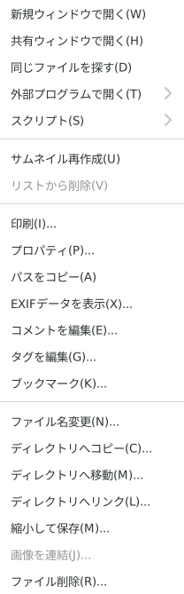
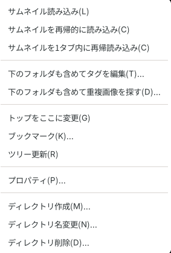
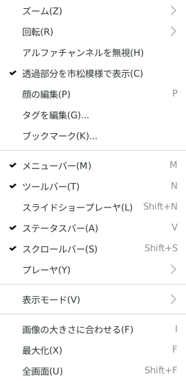

ここでは、マウスボタンで表示されるメニュー (マウスメニュー) について説明します。既定の設定では、右ボタンを押すと表示されます。割り当ては [設定] の各「マウスボタン」のページ (項6) で変更できます。メニューバーと同じ項目については、項3も参照して下さい。

サムネイルビューのマウスメニュー (画像ファイルの上で表示した場合)
サムネイルビュー上でのマウスメニューです。複数選択されている場合、選択されている全ての画像に対して有効です。
- 開く
-
ディレクトリ・アーカイブの上で表示した場合にだけある項目です。そのディレクトリ・アーカイブのサムネイルを開きます。
- 新規ウィンドウで開く
-
選択中の画像を、新規にイメージウィンドウを作成して開きます。複数選択されている場合、その数だけイメージウィンドウが作成されます。
- 共有ウィンドウで開く
-
共有イメージウィンドウで開きます。共有イメージウィンドウを一つも作成していない場合、新規に作成します。既に共有イメージウィンドウが作成されている場合、そのウィンドウを再利用します。なお、このコマンドは複数選択時には使えません。
- 外部プログラムで開く
-
選択中のファイルを登録した外部プログラムに渡します。外部プログラムのリストは、項6.10を参照して下さい。
- スクリプト
-
選択中のファイルを登録したスクリプトに渡します。スクリプトの設定は、項6.10.1を参照して下さい。
- サムネイル再作成
-
選択中の画像のサムネイルを再作成します。
- リストから削除
-
このコマンドはコレクションタブのみ有効です。
リストから削除します。ファイル自体が削除されるわけではありません。
- 印刷
-
選択中の画像を印刷します。[ファイル | 印刷]と同じです。
- プロパティ
-
ファイルのプロパティを表示します。ファイルの権限や所有者などを変更できます。ファイル名と種類は選択してコピーでき、長いものは途中を省いて表示します (全体はツールチップ)。ファイル名の横の「コピー」でフルパスをクリップボードに入れます。
- パスをコピー
-
選択中の画像のフルパスをクリップボードに入れます (複数なら 1 行に 1 つ)。
- EXIFデータを表示
-
EXIF 対応で作成した場合にある項目です。画像の EXIF データを表示します。gexiv2 (Exiv2) を使って作成した場合は JPEG 以外 (TIFF・RAW・PNG・WebP・HEIF など) の EXIF も表示します (gexiv2 なしでは JPEG だけで、他の形式ではこの項目は出ません)。
- コメントを編集
-
選んだ画像のコメント (2.9) を編集します。
- 元のフォルダを開く
-
画像のあるフォルダをサムネイルウィンドウで開き、その画像を選びます。索引や検索の結果のタブなど、いろいろなフォルダの画像が並ぶタブで便利です。
- 同じファイルを探す
-
選んだ画像と中身がまったく同じファイルを、索引の全部の画像から探し、重複画像の結果のウィンドウで開きます (索引から重複画像を探す)。
- タグを編集
-
画像の索引が使える場合にある項目です。選んだ画像のタグを編集します (2.2)。
- ブックマーク
-
選んだ画像をブックマークし、メモの欄を出します (2.8)。
- ファイル名変更 / ディレクトリへコピー / ディレクトリへ移動 / ディレクトリへリンク / ファイル削除
-
[編集] メニューの同じ項目と同じです。
- 縮小して保存
-
選択されている画像を小さくして、別のファイルとして保存します。元のファイルは変わりません。写真の容量を減らしたい時などに使います。
「高さ」「幅」「長い辺」のどれを何 px 以下にするか (初期値は高さ 800 px)、JPEG と WebP の画質、名前に付ける文字 (初期値は「_resized」。big.jpg なら big_resized.jpg を元の画像と同じフォルダに) を選べます。同じ名前のファイルがある時は、名前に -1, -2 などを付けて上書きしません。EXIF の向きは画素に反映して保存します。
撮影情報 (EXIF など) を残すか、残す時に位置情報 (GPS) を除くか、コメントやタグをコピーするかも選べます。指定より小さい画像はそのままコピーします。gdk-pixbuf で書き出せない形式の画像は JPEG で保存します。
1 枚目の画像で、保存後の大きさと容量の見込みを表示します。保存は裏で行うので、その間も操作できます。[中止] で残りを止められます。終わったら [保存した画像を表示] で保存した画像を選んだ状態にできます。
- 画像を連結
-
選択されている 2 枚以上の画像を 1 枚につなげて、別のファイルとして保存します。元の画像は変わりません。
画像: つなげる順です。画像を選んで ↑ ↓ で順を変えられます。
並べ方: 縦 (上から下へ)・横 (左から右へ)・格子状 (列の数を指定)。
大きさ: 幅 (横に並べる時は高さ) を、小さいものに合わせる・大きいものに合わせる・そろえない。そろえない時は中央にそろえ、すき間は白にします。
重なりを探す: 1 枚の写真を分けたもののように、つなぎ目で重なっている部分がある時に、前の画像の終わりと次の画像の始まりのいちばん似ている幅を探して重ねます (JPEG で少し違っていても見つけます)。白い部分のように模様のないところは重なりとみなしません。
継ぎ目・重なり: つなぎ目ごとに、重なりの幅 (px) をスライダーや数字で直せます。「継ぎ目」で直すつなぎ目 (1 と 2、2 と 3、…) を選びます。横の (見つけた重なり: n px) は自動で見つけた値で、見つからなかった時は (重なりは見つかりませんでした) と出ます。
継ぎ目の表示: 上の全体の見本では、つなぎ目を赤い破線で示します (選んでいるつなぎ目は濃く)。その下に、選んだつなぎ目のあたりを元に近い大きさで表示します。縦に並べた時は、上が前の画像の終わり、下が次の画像の始まりです。両端に赤い三角が 2 組あり、1 組目 (上・左) が次の画像の始まり、2 組目 (下・右) が前の画像の終わりで、その間が重なっている部分です (重なりが 0 なら 1 組)。1 組目から先は次の画像を表示しているので、1 組目の位置で絵に段差 (ずれ) がなく続いていれば合っています。
差で表示: 重なっている帯 (2 組の三角の間) を 2 枚の画像の差で表示します。ぴったり合っていると帯が真っ黒になり、ずれていると物の輪郭が明るく浮き出ます。数字を 1 ずつ変えて、帯がいちばん暗くなるところを探すと合わせやすくなります。
重なりが見つからない時: 空や白い背景のように模様のない部分だけで重なっていると、自動では見つけられないことがあります (どこでも同じように見えてしまうため)。その時は、両方の画像に写っている目印 (物の端や文字など) を手がかりに、数字で重なりを入れてください。
画質 (JPEG・WebP、初期値 90)、1 枚目のファイルの情報 (EXIF など) を残すか、1 枚目のコメントと手動で付けたタグを引き継ぐか。
1 枚目と同じフォルダに「名前_join.jpg」(形式は 1 枚目のまま。gdk-pixbuf が書けない形式は JPEG) として保存します。同じ名前があれば -1, -2 などを付けて、上書きはしません。EXIF の向きは画素に反映してから並べます。読み込み・重なりの検出・保存は別スレッドで行います。保存後、[保存した画像を表示] でサムネイルウィンドウの新しい画像を選べます。

タブのマウスメニュー (タブが 1 つの状態)
タブの部分で右クリックすると、現在表示しているタブのリストが表示されます。ここから任意のタブに移動することが可能です。
ディレクトリを再帰的に読み込んだ時など、大量のタブが生成された時に便利です。

ディレクトリビューのマウスメニュー
ディレクトリビューでは、ディレクトリの複数選択は出来ません。そのため、各コマンドの実行対象は、必然的にマウスカーソル下のディレクトリになります。
- サムネイル読み込み
-
カーソル下のディレクトリを読み込み、サムネイルビューに表示します。初めてサムネイル表示する場合は新規にタブが生成され、既に読み込まれている場合は、そのタブがアクティブになります。
- サムネイルを再帰的に読み込み
-
カーソル下のディレクトリ以下を再帰的に読み込みます。ディレクトリごとにタブが生成されます。
- サムネイルを1タブ内に再帰読み込み
-
カーソル下のディレクトリ以下を再帰的に読み込み、全ての画像を1つのタブに表示します。
- 下のフォルダも含めてタグを編集...
-
カーソル下のディレクトリと、その下のディレクトリにある全ての画像のタグを編集します (2)。
- 下のフォルダも含めて重複画像を探す...
-
カーソル下のディレクトリと、その下のディレクトリにある画像のうち、中身がまったく同じファイルがあるものを探します。同じファイルがほかのフォルダにあっても見つけます (索引から重複画像を探す)。
- トップをここに変更
-
カーソル下のディレクトリを、ディレクトリビューのトップにします。
- ツリー更新
-
ディレクトリビューを更新します。コマンドラインからディレクトリ操作(作成・移動・削除)を行った場合に、それらを反映させるために行います。
- プロパティ
-
ディレクトリのプロパティを表示します。権限や所有者などを変更できます。
- ディレクトリ作成
-
カーソル下のディレクトリ直下に、新規にディレクトリを生成します。
- ディレクトリ名変更
-
カーソル下のディレクトリ名を変更します。
- ディレクトリ削除
-
カーソル下のディレクトリを削除します。確認ダイアログの後、削除が実行されます。
プレビュー上のマウスメニューには、ズーム・回転・アルファチャンネルを無視・透過部分を市松模様で表示・動画・表示モード・スクロールバーを表示 [Shift + S]・サムネイル作成 [Shift + T]・メモリバッファ [Ctrl + B]・画像を保存・印刷 があります。各項目は、イメージウィンドウのメニューの同じ項目 (項3.1〜項3.3、項3.8) と同じです。

イメージウィンドウのイメージビューのマウスメニュー
イメージウィンドウのイメージビュー上のマウスメニューは、イメージウィンドウの [表示] メニュー (項3.3) と同じです。
GTK 4 版では、次の項目を加えています (プレビューのマウスメニューにもあります)。
回転 - 左右反転 (X) : 画像を左右反転します。回転と同じく、画像ごとに記憶します。
画像をクリップボードにコピー (Shift+Ctrl+C) : 表示している画像をクリップボードにコピーします。
切り抜き (C) : 表示している画像の一部を切り抜いて別のファイルに保存します (3.2)。
顔の編集 (P) : 顔パネルを開き、画像に写っている顔に名前を付けます (2.3)。顔の認識が使える場合だけの項目です。
元のフォルダを開く : 画像のあるフォルダをサムネイルウィンドウで開きます。
タグを編集 : 表示している画像のタグを編集します (2.2)。画像の索引が使える場合だけの項目です。
ブックマーク : 表示している画像をブックマークします (2.8)。